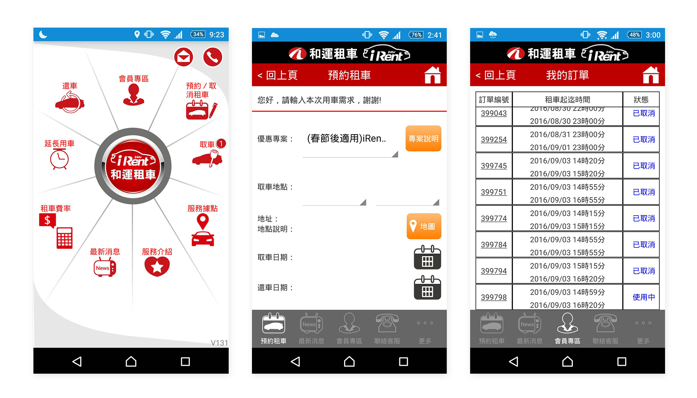
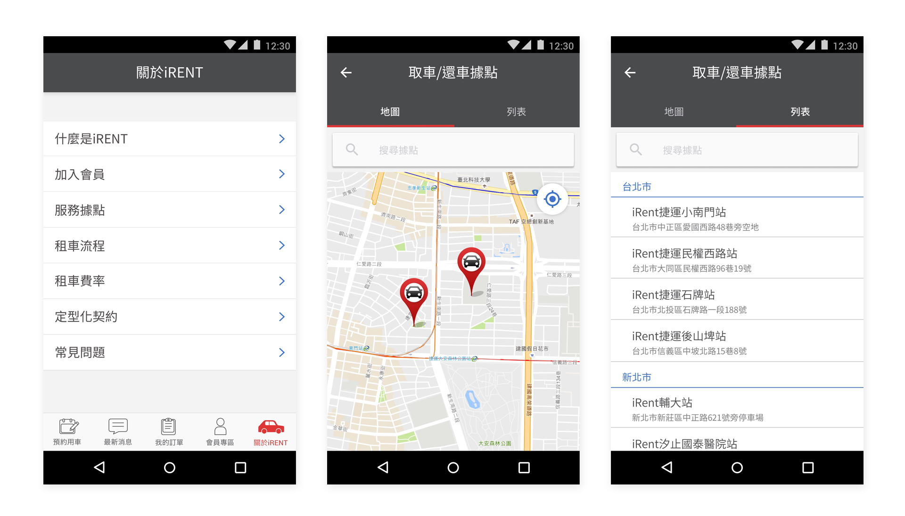
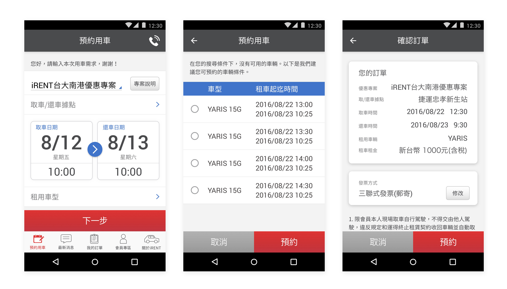
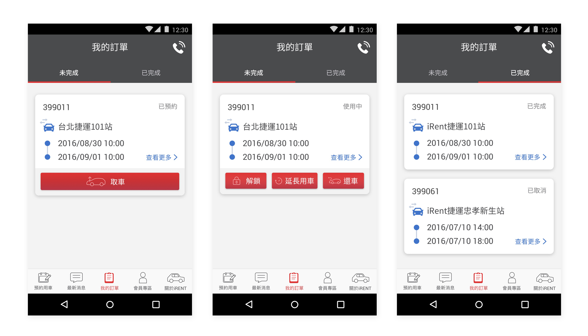

iRent is an app which is used to book a rental car anywhere and anytime.
New Functions Added
- Select the car rental location in map view or list view
- Booking time and nearby location recommendation features are added to reduce the cases of reservations unavailable
- Remotely locking/unlocking features are added
- Different pick-up and drop-off spots for some specific locations (the same concept as Ubike)
- 2017
- Sketch, Photoshop, Illustrator
Before Revision

Redesign Points
- There are up to eleven unarranged buttons making users inaccessible to the feature they need.
- “Ongoing bookings” and “Completed bookings” sections were not clearly differentiated, making a lengthy page.
- The booking information was arranged in time order where the newest one was put at the bottom of the list. Users have to scroll down the lengthy page to check their latest booking.
After Revision

- Related iRent service information like “Location,” “Introduction,” and “Rating” are rearranged and combined under “About iRent” section.
- Pick-up locations are represented in two ways: map view and list view.

- Remove the logo underneath the status bar to increase the usable space.
- Redesign the layout to create a more lucid interface.
- The center one is the “Recommendation Booking Time” page (shown in the case when there is no available car for booking.)

- Separate the ongoing and the completed bookings.
- Buttons displayed on the page vary when the present status changes and accordingly creates different tasks for the users.
- Functions of pickup, time extension, and return will be triggered only when orders have been placed or when rental cars are in use.
Download